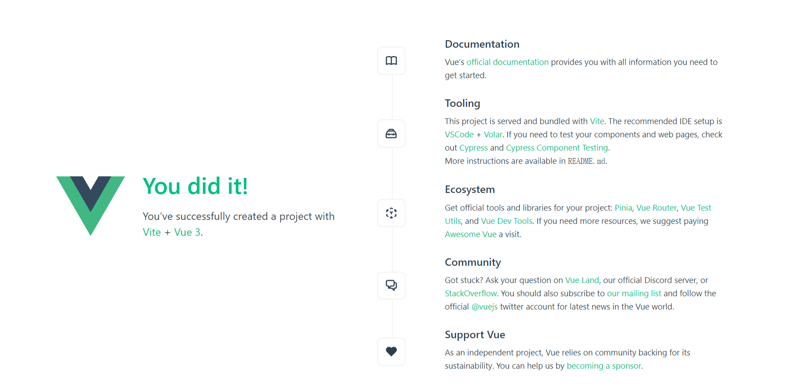

Vue3基本知识
Vue3基本知识
Hello Vue3
创建vue3项目
1
2
3
4
5
6npm init vue@latest
然后一直回车,接着
cd vue-project
npm install
npm run dev项目开启效果:

- 学习准备，删除不必要的
- 清空assets，components文件夹
- 修改文件App.vue, main.js
App.vue
1 | <script setup></script> |
main.js
1 | import { createApp } from 'vue' |
响应式基础
声明式渲染reactive/ref函数
App.vue
1 | <script setup> |
属性绑定/事件监听
App.vue
1 | <script setup> |
条件与循环
App.vue
1 | <script setup> |
表单绑定
App.vue
1 | <script setup> |
计算属性computed()
App.vue
1 | <script setup> |
模板引用
模板引用：主要用于手动操作 DOM
App.vue
1 | <script setup> |
侦听器
本博客所有文章除特别声明外，均采用 CC BY-NC-SA 4.0 许可协议。转载请注明来自 K-Blog！